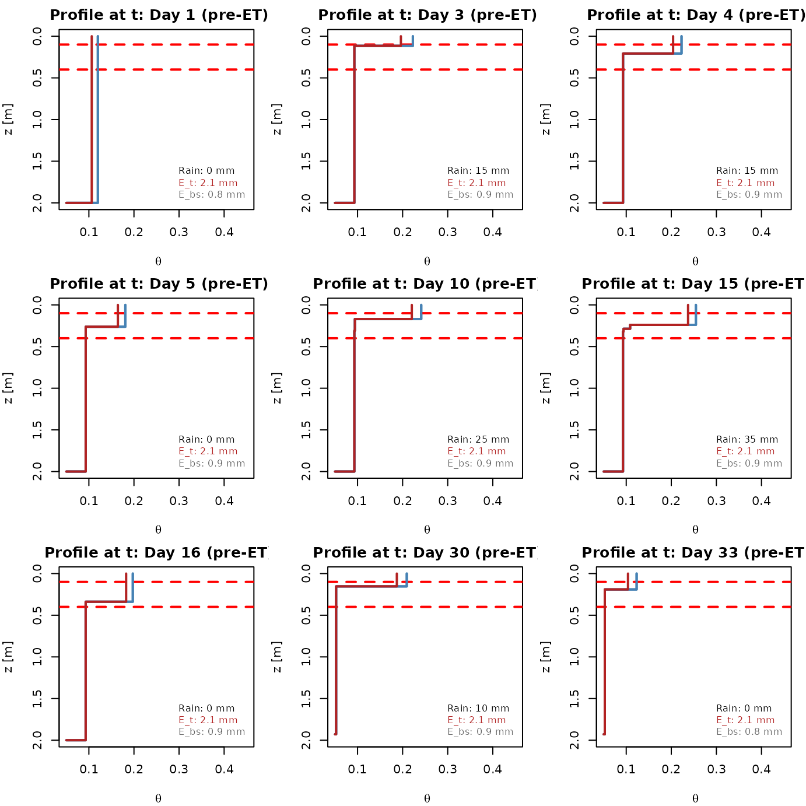
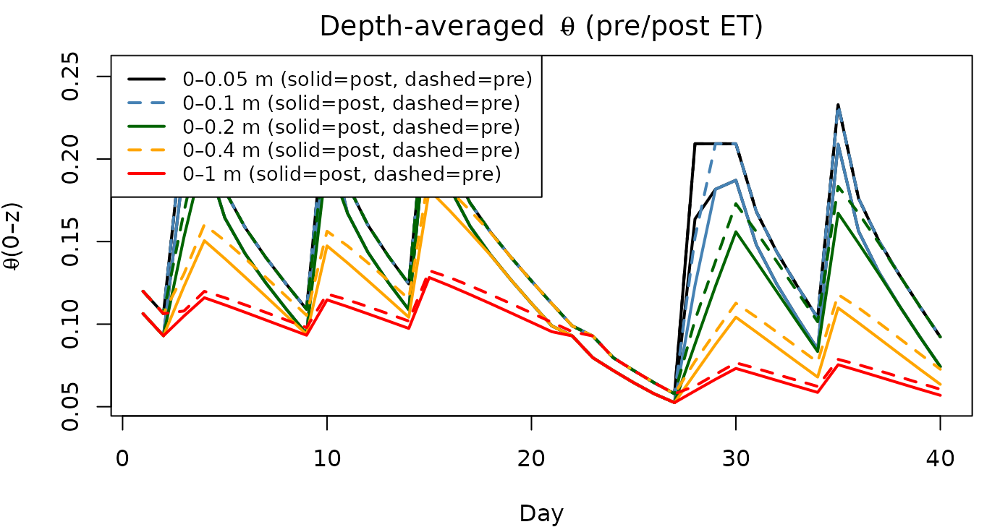

Struthers Wetting-Front Model for Infiltration, Redistribution, and Drainage with ET (θ★ / θwp)
Tommaso Martini
2025-10-31
Source:vignettes/vignette.Rmd
vignette.RmdOverview
This vignette documents a front‐tracking water balance model that represents a vertical soil column of depth (m) with gravitational infiltration and redistribution (I–R), free drainage at the bottom (D), and evapotranspiration (ET) applied after each I–R–D step. The state is stored as an ordered list of wetting fronts: where is the depth (m) of the -th front and is the volumetric water content (–) immediately above that front. By convention:
-
Front 1 is the deepest front
(closest to
);
- Front is the shallowest (closest to the surface).
Between two consecutive fronts and the profile is piecewise constant at (rectangular layers). The residual and saturated water contents are $\thr$ and $\ths$, respectively.
We assume a Brooks–Corey conductivity model $$ K(\theta) \;=\; K_s \left(\frac{\theta-\thr}{\ths-\thr}\right)^{1/b}, $$ with [] and shape parameter .
Notation
-
[m]: profile depth.
-
[m]: depth at which the wetting model starts (often
).
-
[]: infiltration supply at the soil surface.
-
$\thstar$ (theta_star):
stress onset threshold.
-
$\thwp$ (theta_wp):
wilting threshold for transpiration.
-
[m]: active root-zone thickness from the surface;
[m]: active thickness for bare-soil evaporation.
- []: potential evaporation (reference ET) per day; fraction allocated to transpiration on that day.
Infiltration–Redistribution Equations
Flux partition and front ODEs (Eqs. 7a–7b)
Let be the vertical flux immediately above front (positive downward). Over one sub-step we partition the surface supply using the local conductivities: with the convention . The layer water contents evolve with a gravitational balance (Struthers et al., Eqs. 7a–7b). In discrete form with an explicit–implicit Picard iteration on , one time step updates where indexes the Picard iterate (all updated simultaneously). Alternative formulations iterate on ; both lead, after convergence, to the same mass update below.
Mass balance for front depths (Eq. 1)
Once and the integrated layer volumes are known, front depths are updated by the discrete mass balance Here is a small numerical tolerance. This update preserves column water mass by construction.
Free drainage (D) and merging
Free drainage is applied only to the shallowest front (index ) after the mass update:
After I–R–D, adjacent fronts are merged if either
- they overtake in depth:
;
or
- their contrast is negligible:
;
or
- (stability guard) a inversion is detected, i.e. for some .
Merging conserves water volume by aggregating positive storage contributions
Evapotranspiration with $\thstar$ and $\thwp$
ET is applied after I–R–D, without moving the front depths . Let the root-zone be . Define the depth-weighted mean water content in the root zone: $$ \bar{\theta}_{\text{root}} \;=\; \frac{1}{Z_{\text{root}}}\int_{\delta}^{\delta+Z_{\text{root}}}\theta(z)\,\dz \;\approx\; \frac{1}{Z_{\text{root}}}\sum_{i\in \mathcal I(\delta,\delta+Z_{\text{root}})} \theta_i\,\Delta z_i^\ast, $$ where is the fraction of layer that lies inside the root-zone.
Let be the potential transpiration depth for the daily step, and the bare-soil potential evaporation depth.
Transpiration (Eqs. 10–12, with $\thstar$, $\thwp$)
Potential (unstressed) phase up to $\thstar$.
Water needed to raise/reduce the mean to $\thstar$: $$ S_{\star} \;=\; \max\!\left(0,\ \bigl(\bar{\theta}_{\text{root}}-\thstar\bigr)\,Z_{\text{root}}\right), \qquad t_{\star} \;=\; \frac{S_{\star}}{D_t}. $$ If then (all potential).Stressed phase between $\thstar$ and $\thwp$.
The available storage above $\thwp$ in the root-zone is $$ S_{\mathrm{avail},\wp} \;=\; \int_{\delta}^{\delta+Z_{\text{root}}}\max\big(\theta(z)-\thwp,\,0\big)\,\dz. $$ The exponential form (Eq. 12, re-expressed in ) over the leftover time gives the target $$ E_{t,\mathrm{stress}} \;=\; S_{\mathrm{cap}}\, \Bigl(1 - e^{-\,(\,D_t(\Delta t - t_{\star})\,)/S_{\mathrm{cap}}}\Bigr),\qquad S_{\mathrm{cap}} = (\thstar-\thwp)\,Z_{\text{root}}. $$ The total target is .Application rule (volume removal).
Remove top–down from the root-zone, reducing of the shallowest layers first while enforcing $\theta\ge \max(\thwp,\thr)$. If a layer’s storage is exhausted, drop that front (merge).
Bare-soil evaporation (Eq. 9)
Define the evaporative layer (typically –). Its available storage above $\thr$ is $$ S_{\mathrm{evap}} \;=\; \int_{\delta}^{\delta+Z_{\text{evap}}}\max\big(\theta(z)-\thr,\,0\big)\,\dz. $$ The daily target is $$ E_{bs}^\text{target} \;=\; S_{\mathrm{evap}}\, \Bigl(1 - e^{-\, D_{bs}/S_{\mathrm{evap}}}\Bigr), $$ applied top–down within while enforcing $\theta\ge\thr$.
Multilayer transpiration (Eq. 18)
If transpiration is split across multiple active layers (e.g. surface and deep roots), distribute the potential demand as $$ f_j \;=\; \frac{\displaystyle \sum_{i\in \mathcal I_j} \Big(\max(\theta_{i,j},\thwp) - \max(\theta_{i-1,j},\thwp)\Big)} {\displaystyle \sum_{m=1}^{J}\sum_{i\in \mathcal I_m} \Big(\max(\theta_{i,m},\thwp) - \max(\theta_{i-1,m},\thwp)\Big)}, \qquad \sum_j f_j = 1, $$ and apply the two-phase rule independently in each layer with .
Numerical safeguards
- Clamp $\theta\in[\thr,\ths]$.
- Merge when , on overtake, or on -inversion.
- When applying ET with very large targets, sub-cycle the removal to avoid multiple front deletions in one call.
Example: 40‑day simulation with hourly sub‑steps
The following example demonstrates I–R–D with daily ET using $\thstar$ and $\thwp$. Units are meters and days.
library(strutR) # if packaged
theta_r <- 0.05
theta_s <- 0.45
beta <- 1 / 5
Ks <- 1.0 # m/day
L <- 2.0
delta <- 0.0
tol_merge <- 1e-6
# ET thresholds and settings
theta_wp <- 0.08
theta_st <- 0.20
Z_root_series <- rep(0.40, 40) # m
Z_evap <- 0.10 # m top layer for bare-soil evaporation
Cv <- 0.7 # canopy fraction
dt_day <- 1.0 # day
# Initial profile: dry uniform, one deepest front at L
fronts <- list(list(theta = 0.12, x = L))
# Forcings
set.seed(1)
ndays <- 40
rain_mm <- rep(0, ndays)
rain_mm[3:4] <- 15
rain_mm[10] <- 25
rain_mm[15] <- 35
rain_mm[28:30] <- 10
rain_mm[35] <- 20
f_day <- rain_mm / 1000 # m/day
ETp_mm <- rep(3, ndays)
ETp <- ETp_mm / 1000 # m/day potential ET
dt_sub <- 1 / 24
sub_steps <- as.integer(1 / dt_sub)
profiles_daily_preET <- vector("list", ndays)
profiles_daily_postET <- vector("list", ndays)
drainage_daily <- numeric(ndays)
E_t_daily <- numeric(ndays)
E_bs_daily <- numeric(ndays)
for (d in seq_len(ndays)) {
# Infiltration–Redistribution–Drainage over the day (24 substeps)
f_t <- f_day[d]
for (k in seq_len(sub_steps)) {
step <- struthers_redistr_under(
fronts, theta_r, theta_s, beta, Ks,
L = L, delta = delta,
f_t = f_t, # m/day
dt_sub = dt_sub, # day
infill_all = FALSE,
debug = FALSE,
theta_field_capacity = NA_real_,
Z_1 = NA_real_,
tol_merge = tol_merge
)
fronts <- step$fronts
drainage_daily[d] <- drainage_daily[d] + step$drainage
}
profiles_daily_preET[[d]] <- fronts
# Daily ET: transpiration (θ★/θwp) + bare-soil evaporation (no movement of x)
et <- apply_ET(
fronts = fronts,
ep = ETp[d], # m/day potential ET
Cv = Cv, # fraction to transpiration
dt = dt_day, # one-day ET step
theta_star = theta_st,
theta_wp = theta_wp,
theta_r = theta_r,
theta_s = theta_s,
Z_root = Z_root_series[d],
Z_evap = Z_evap,
delta = delta,
debug = FALSE,
tol_merge = tol_merge
)
fronts <- et$fronts
E_t_daily[d] <- et$E_t
E_bs_daily[d] <- et$E_bs
profiles_daily_postET[[d]] <- fronts
}Daily profiles (pre‑ET vs post‑ET)
days_to_plot <- c(1, 3, 4, 5, 10, 15, 16, 30, 33)
op <- par(no.readonly = TRUE)
par(mfrow = c(3, 3), mar = c(4, 4, 2, 1))
for (dd in days_to_plot) {
plot_single_profile(theta_r, theta_s, profiles_daily_preET[[dd]],
soil_depth = L,
timestep = paste0("Day ", dd, " (pre‑ET)"),
Z_1 = delta + Z_root_series[dd], Z_2 = delta + Z_evap,
colore = "steelblue"
)
# overlay post‑ET in red
theta_i <- vapply(profiles_daily_postET[[dd]], function(fr) fr$theta, numeric(1))
x_i <- vapply(profiles_daily_postET[[dd]], function(fr) fr$x, numeric(1))
ord <- order(x_i)
theta_i <- theta_i[ord]
x_i <- x_i[ord]
lines(c(theta_i[1], theta_i, theta_r, theta_r),
c(0, x_i, x_i[length(x_i)], max(x_i)),
type = "s", lwd = 2, col = "firebrick"
)
legend("bottomright",
inset = 0.02, bg = "white", cex = 0.8, bty = "n",
legend = c(
sprintf("Rain: %g mm", rain_mm[dd]),
sprintf("E_t: %.1f mm", 1000 * E_t_daily[dd]),
sprintf("E_bs: %.1f mm", 1000 * E_bs_daily[dd])
),
text.col = c("black", "firebrick", "gray40")
)
}
par(op)Depth‑averaged $\bar\theta(0,z^\*)$ time series
depths <- c(0.05, 0.10, 0.20, 0.40, 1.0)
depths <- depths[depths <= L]
Theta_bar_pre <- matrix(NA_real_, nrow = ndays, ncol = length(depths))
Theta_bar_post <- matrix(NA_real_, nrow = ndays, ncol = length(depths))
colnames(Theta_bar_pre) <- paste0("0–", depths, " m")
colnames(Theta_bar_post) <- paste0("0–", depths, " m")
for (d in seq_len(ndays)) {
for (j in seq_along(depths)) {
Theta_bar_pre[d, j] <- compute_weighted_avg_theta_by_depth(
profile = profiles_daily_preET[[d]],
depth_limit = depths[j], theta_r = theta_r, delta = delta, L = L
)
Theta_bar_post[d, j] <- compute_weighted_avg_theta_by_depth(
profile = profiles_daily_postET[[d]],
depth_limit = depths[j], theta_r = theta_r, delta = delta, L = L
)
}
}
cols <- c("black", "steelblue", "darkgreen", "orange", "red")
par(mar = c(4, 4, 2, 1))
plot(1:ndays, Theta_bar_pre[, 1],
type = "l", lwd = 2, col = cols[1],
xlab = "Day", ylab = expression(bar(theta) ~ "(0–z)"),
ylim = range(Theta_bar_pre, Theta_bar_post, na.rm = TRUE),
main = expression("Depth‑averaged " ~ bar(theta) ~ " (pre/post ET)")
)
for (j in seq_along(depths)) {
lines(1:ndays, Theta_bar_pre[, j], col = cols[j], lwd = 2, lty = 2)
lines(1:ndays, Theta_bar_post[, j], col = cols[j], lwd = 2)
}
legend("topleft",
bg = "white", cex = 0.85,
legend = paste0(colnames(Theta_bar_pre), " (solid=post, dashed=pre)"),
col = cols[seq_along(depths)], lwd = 2, lty = c(1, 2)
)
Daily diagnostics
par(mfrow = c(1, 2), mar = c(4, 4, 2, 1))
plot(seq_len(ndays), 1000 * drainage_daily,
type = "h", lwd = 2,
xlab = "Day", ylab = "Drainage [mm]", main = "Daily drainage"
)
abline(h = 0, lwd = 1)
plot(seq_len(ndays), 1000 * (E_t_daily + E_bs_daily),
type = "h", lwd = 2,
xlab = "Day", ylab = "ET [mm/day]", main = "Daily ET (total)"
)
abline(h = 0, lwd = 1)